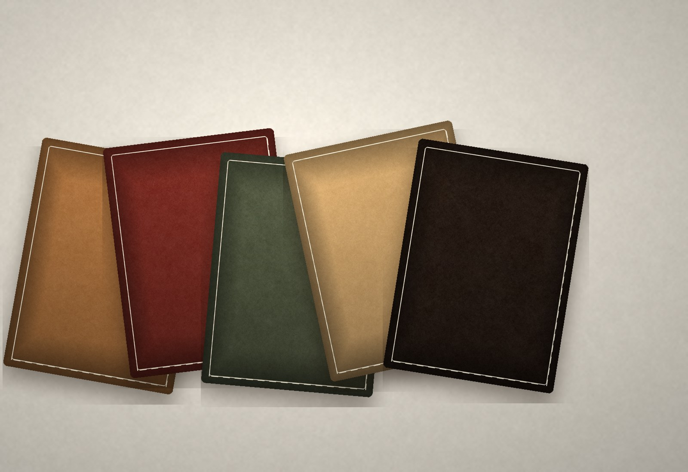

「皮是有脾气的。你顺着它，它才愿意服帖。」
早年间的皮匠，一副担子走街串巷：缝补皮袄、钉鞋掌、修马具。到了父辈， 摊子变成了铺子，工具从锥子、蜡线换成了裁皮刀与菱斩，唯一没变的是手上的分寸。
王氏手工皮艺把这门手艺带进了长春高新区的栖乐荟。五楼不算显眼， 但胜在安静——一张工作台、几排皮料、一面挂满工具的墙，客人推门进来， 能看见一件皮具从头到尾是怎么做出来的。
2020 年前后，这门手艺获得了首批非遗认证。对我们来说，这不是一块可以挂起来招揽生意的招牌， 而是一条更严的标准：料要真、工要细、话要实。
机器一天能做一百个包，我们只做几个。不是做不快，是有些步骤快不得： 削边要一刀一刀削，封边要一遍一遍磨，缝线要一针一针拉紧。
来店里的客人，常常是先看、再摸、最后坐下来聊。聊着聊着， 一只包的样子就出来了——尺寸按他的习惯，皮料按他的喜好，缝线颜色按他常穿的衣服。

机器一天能做一百个包，我只想做好一个。王氏手工皮艺 · 主理人
一双手
走过的路
没有惊天动地的故事，只有一代代人把同样的动作重复到熟稳。
皮匠担子
祖辈挑着担子走街串巷，缝补皮具、钉掌修鞋。那会儿没有「品牌」，只有「手艺好不好」。
一双手
手艺在家族里传下来，从修补到制作。工具添了几件，工序一步没减。
栖乐荟 5F
把工坊搬进商场，让路过的人看见一件皮具是怎么做出来的。看得到过程，才信得过结果。
非遗课堂
开课、带徒、做体验，让手艺不只留在柜子里。有人愿意学，它就还活着。
三个不
说起来简单，做起来是每一天的选择。
不赶工
工期写多少就是多少。宁可让你多等一周，也不把没干透的封边交出去。
不将就
皮面有虫伤就换一张，线距不匀就拆了重缝。瑕疵不会因为卖出去就消失。
不藏私
怎么选皮、怎么保养、哪里容易坏，都愿意讲。手艺不怕人看，怕没人看。